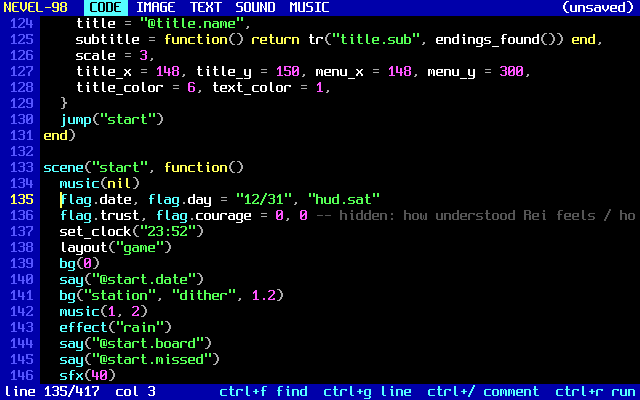
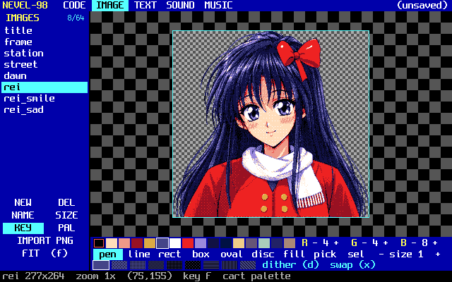
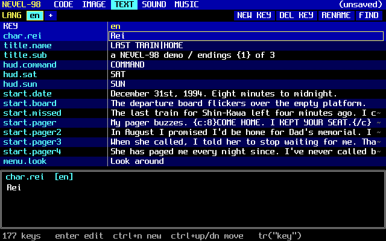
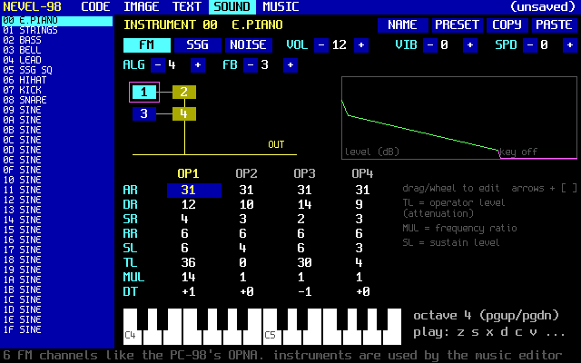
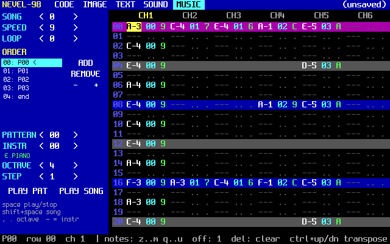
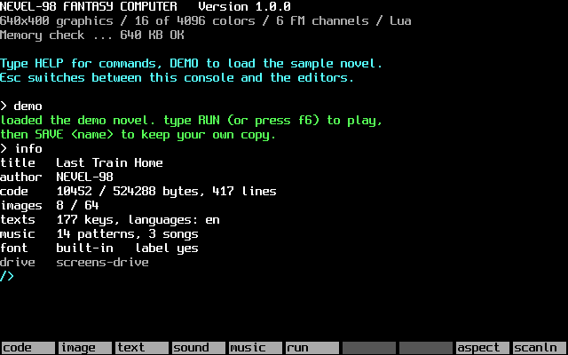
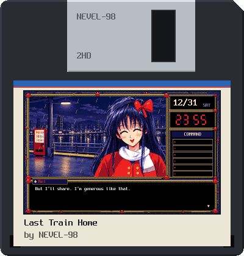

VISUAL NOVEL FANTASY COMPUTER
NEVEL-98
Make visual novels the way they looked on a 1990s Japanese computer.
Draw in 16 colors, compose FM music and write the story in Lua, all inside one machine inspired by the NEC PC-9801 adventures. Then share your game as a floppy disk or a web page.
Both run in your browser. New here? Start with the manual.
A computer that never existed
NEVEL-98 imagines the machine behind the PC-98 adventures of the late '80s and '90s. Its limits are the style: dithered pixel art, square text windows, FM music.
- 16 colors on screen, so shading comes from dithering, like the originals.
- Every image can carry its own palette, so each scene gets its own mood.
- The machine's Lua has no file or OS access: a cart only talks to the API, and saved games replay exactly.
> specs display 640×400, 60 frames per second colors 16 on screen, each one of 4096 (0xRGB) palettes one per cart, plus one per image text 8×16 and 6×12 fonts, 80×25 like PC-98 sound 6 channels: 4-op FM, SSG square, noise music 32 instruments, 64 patterns, 8 songs images 64 per cart, up to 640×400 each texts key tables, up to 8 languages code Lua 5.4, up to 512 KB >
A visual novel is just Lua
Every call waits as long as it needs to: say waits for the player to read, choice waits for an answer, a transition waits until it ends. You write the story from top to bottom.
scene("start", function()
layout("game")
bg("station", "dither")
music(1)
show("rei_smile", "right", "dither")
say("Rei", "Ehehe! You missed it too?")
if choice{ "Who are you?",
"I didn't miss it. I let it go." } == 1 then
flag.asked = true
end
jump("platform")
end)bg()show()say()choice{}menu{}jump()layout()music()quake()flagthe_end()
Five editors behind the function keys
Everything you need lives inside the machine. Press Esc for the console, F1–F5 for the editors, F6 to run your game.

Code
A Lua editor with syntax highlighting for keywords, API names, strings and numbers.
- Undo, find, go to line, comment, duplicate
- Indent a whole selection with Tab
- A runtime error stops the cart: press F1 to open the line that failed

Image
A pixel art editor built around two colors and a dither pattern, the classic PC-98 shading.
- Pen, line, boxes, ovals, fill, selection and stamps
- Dither brushes that mix the primary and secondary color
- Edit the cart palette or the image's own palette

Text
Your script as a table of keys, one column per language. Call a line with "@rei.hello".
- Up to 8 languages, with a Language option for players
- Missing translations are shown in red
- CSV import and export for translators

Sound
32 instruments in the spirit of the PC-98's OPNA chip.
- 4-operator FM with 8 algorithms, drawn as a diagram
- SSG square waves and noise
- Play them on your keyboard while you tweak, or start from a preset

Music
A 6-channel tracker for the songs of your game.
- 64 patterns of 32 rows, 8 songs with loop points
- Transpose, copy and paste whole patterns
- Sound effects borrow only the channels they use

Console
Where the machine boots. Load and save carts, import pictures, export your game.
import photo.pngturns any picture into 16-color artexport game.htmlmakes a web player- Tab completes file names, Up recalls commands
Built for the PC-98 look
The visual novel engine is part of the machine, so a new cart already has saves, a backlog and a title screen.
Framed layouts
The scene in an ornate frame, side panels for a clock, the date or a command menu, the text in a console below.
Adventure commands
Choices, PC-98 style command menus like Look / Talk / Move, flags and multiple endings.
Transitions
Dither, wipe, blinds, curtain and mosaic dissolves, palette fades, flashes and screen shake.
Saves included
6 save slots, backlog, auto and skip, text speed and volume. Loading replays the scene exactly.
Any picture, 16 colors
Import a PNG or JPG and get ordered (Bayer) or error-diffusion dithering, with a shared or own palette.
Game mode too
Define
_draw(and_update) with no scenes, and the cart runs as a plain game loop.


Share it on a floppy disk
A game is a cartridge, and a cartridge travels three ways.
.n98The whole game as one text file: code, palette, images, music and texts. Easy to read and to keep in git.
.n98.pngA picture of a 3.5" floppy with your game's label. The cart is hidden inside the PNG.Share floppies as files: image hosts that re-encode pictures remove the cart.
.htmlOne page with the machine and your game inside. Upload it anywhere and it plays.
WHY · A NOTE FROM BLUEMOON
Sixteen colors were enough
I have loved PC-98 visual novels for a long time. NEC's PC-9801 and the machines that followed it were the computers of Japan from the early 1980s to the late 1990s, and the stories written for them shaped what visual novels and adventure games still are today.
The spark for NEVEL-98 came from an anime, 16bit Sensation: Another Layer (2023), in which an illustrator from today ends up in 1992, drawing for a bishoujo game studio. The show itself didn't stay with me for long. What stayed was its love for the PC-98: the pixels placed one by one, the cramped studio, the people who made it all work. I was already a fan, and it made me want to build something.
The PC-98 showed 640×400 pixels and sixteen colors at once, picked from 4096. On that screen Hideo Kojima made Policenauts, ELF made YU-NO and ZUN started Touhou, and a whole generation of artists learned to dither a sunset and shade a face by hand.
The philosophy of limits
Those developers didn't have infinite memory, infinite colors or infinite time. They had sixteen colors, a few FM voices and a floppy disk. And that was the point. When you can't add more, you have to choose: every color has to earn its place, every melody has to say something with a handful of voices, every scene has to work with one background and a few lines of text.
Limits take away the endless options and leave the one question that matters: what is this story about, and how do I make you feel it? That is why those games are still remembered. Not for what the machines could do, but for what people did with so little.
NEVEL-98 keeps those limits on purpose: 640×400 · 16 colors · 6 FM channels · one cart. Not out of nostalgia, but so you stop worrying about tools and start making something.
I hope NEVEL-98 can be a small machine that lights a spark. If it makes you want to draw one face, write one scene or compose one melody, and then finish your story, it has done its job.
Bluemoon
Last Train Home
December 31st, 1994. You've just missed the last train of the year. On the empty platform you meet Rei, whose radio plays songs from next year.
The demo cart: 3 endings, 3 FM tracks and a red LED clock counting down to midnight. Its source is open in the editors, ready to take apart.
Get NEVEL-98
Every editor and every feature is in the free browser version. The desktop version is for working offline, and buying it keeps the machine running.
Browser
free
The whole machine and the demo, in any modern browser. Nothing to install. Carts are kept in the browser's storage, and you can save them to files.
Open NEVEL-98Desktop
from $4.99 · pay what you want
Windows. Works offline, with real files and folders, fullscreen and no browser storage limits. Pay more if you want to support the project.
Get it on itch.ioYour games
yours
Floppies and exported pages are yours to share, give away or sell, with no fee and no royalty. The player inside an exported page is free to distribute with your game.
Read the docs